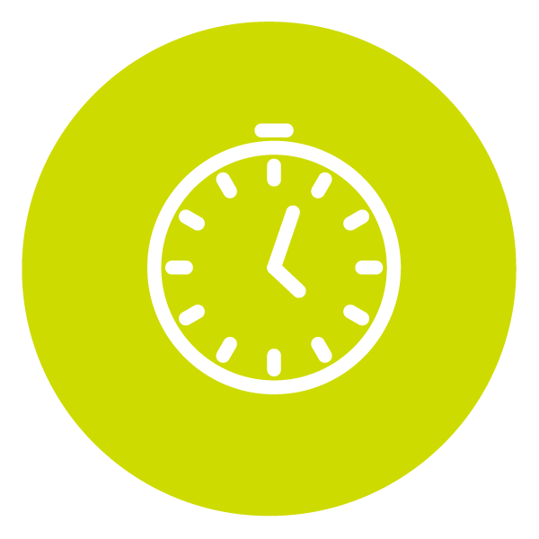
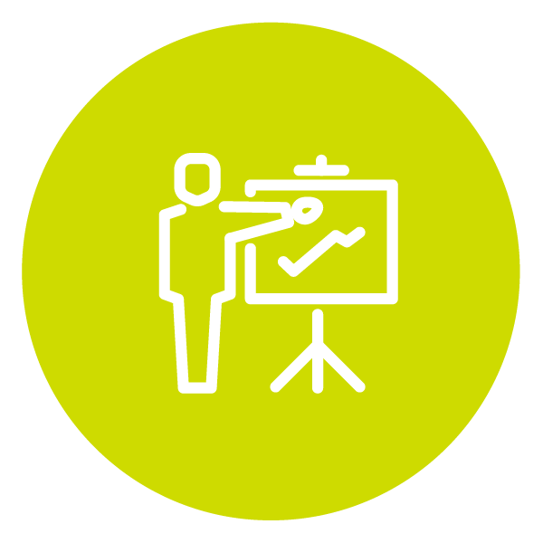

| 다양한 훈련과정을 하나의 아카이브에서 이용 가능 |
| 큐레이션 서비스를 통해 기업, 훈련생이 필요한 과정을 손쉽게 선택 가능 |
| 숏폼, 마이크로러닝 등 트렌디한 콘텐츠를 적시 활용 가능 |
| 개인별로 필요한 부분만 택하여 원하는 만큼, 무제한으로 시청 가능 |
| 훈련 결과보고서를 통해 교육 전후 훈련생의 역량향상도를 확인 가능 |
‘일반 콘텐츠 부문 1위’ 주식회사 데이원컴퍼니는 글로벌 게임사 해긴의 제작 효율 문제 해결을 위해 구성원 대상 사전 인터뷰, FGI 등을 통해 기업 니즈를 포착하고, 핵심 툴을 중심으로 콘텐츠를 개발했다. 이를 통해 작업 속도를 단축, 수정 회차 감소 등의 성과를 달성해 높은 평가를 받았다.
데이원컴퍼니 디지털원격훈련 아카이브 효능

작업속도 50% 단축

수정회차 35% 단축
‘AI 콘텐츠 부문 1위’ 한국생산성본부는 KAIST 협업 실시간 특강, 생성형 AI·영상제작·프롬프트엔지니어링 등 프로젝트 기반 실습형 이러닝 과정을 개발해 산업특화 AI 과정을 제공했다. 이를 통해 기업의 솔루션 개발·업무 최적화, 글로벌 경쟁력 확보로 이어지는 지속 가능한 기업 혁신을 이어간 사례로 높은 평가를 받았다. 이우영 이사장은 “앞으로도 공단은 「전국민 평생직업능력개발 상식의 시대」를 위해 노력하겠다”고 말했다